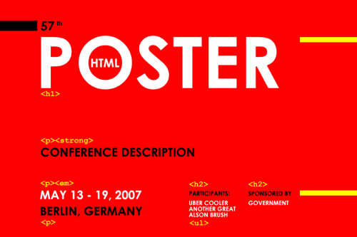

Seeing a <div class="left green">...</div> block in HTML code might hurt the eyes of a lot of web designers. To identify good and bad id and class names, it is important to understand the idea of the CSS.
The World Wide Web Consortium (W3C) defines CSS2 as:
a style sheet language that allows authors and users to attach style (e.g., fonts, spacing, and aural cues) to structured documents (e.g., HTML documents and XML applications). By separating the presentation style of documents from the content of documents, CSS2 simplifies Web authoring and site maintenance.
Therefore class names left, green or largetext are theoretically good according to the first part of the CSS definition, but very very bad according to the second part, which can be illustrated with the following example.
Imagine that you need to change those customer testimony boxes to centred alignment and yellow background with different typeface. The result would be a class named green which defines yellow background and different typeface, and there is nothing green about that <div> block any more. What if you had also used the green class for styling the product descriptions? It soon would be impossible to maintain and expand a website that uses such CSS identifiers. Class name testimonies would be much more appropriate to the particular needs. In addition, the product description class prod-desc could be defined together with testimonies at first place and separated if such necessity arises.
In general, it is a sound practice to choose identifiers that describe the content of that HTML section, not how it looks.
Design Limitations of the CSS
Despite the beauty of semantic HTML mark-up and availability of CSS, the web currently has some intrinsic limitations for designers, who want complete control over the layout of the content.
Traditional graphic design has no need for semantic content. Graphic designers have two dimensional environment available, while the content of the web is linear. Graphic designers use the size, shape, colour and position of different content elements to create the structure of the message, but the web uses semantic HTML mark-up to structure its content. And CSS aims to be that ultimate presentation layer that adds the extra dimension also to the web content.
There is no way to tell Adobe Illustrator (or any other graphic authoring software) that the particular text is the main heading of a poster and that the image following it shows two people sitting in a beach, holding hands and watching sunset. In such context the graphical presentation of the content seems to be limiting over the semantic description available on the web. Semantics is the third dimension of the web content, which print medium will never have. The CSS, however, aims to define the second dimension of the web and make it closer to the print, in terms of freedom of layout.
Unfortunately the CSS currently doesn’t offer a complete control over the layout of the content. In general, however, web has far more ways of describing and defining its content than the print or video medium. The content of the web isn’t locked into the visual or audio definitions chosen by the designer. It symbolizes accessibility and availability of the
information for everyone.
Grid Layouts and Content Grouping
In a grid based page layout the content is aligned with a certain number of equally spaced imaginative vertical lines. This creates a system of presentation which is visually harmonic and aids the reader in perceiving and understanding the content. (Wikipedia about the grid)
Such simple and coherent presentation of textual and graphical content became popular after the Second World War together with the modernism in traditional art.
The current version of CSS doesn’t directly provide ways to use columns and grids for presentation. And it is not the purpose of HTML either, as they don’t add any semantic description to the content.
Therefore web designers have to find ways of using existing CSS declarations and available HTML <div> tag, which is meant for sectioning and grouping the content.
One of the important characteristics of the grid is reusablility – it should be possible to devise a set of CSS classes that enable sectioning of the content into grids, and could be applied for any type of content. The only purpose of these classes is to define the grid, not the content inside the grid. This is important.
Such CSS definition requires two nested HTML <div> elements by design – one defines the grid while the other its content. Different interpretation of padding, margin and border rules among different browsers is another reason for having two separate <div> tags. For a consistent rendering of the grid, the extra mark-up is simply necessary.
Now a question to all the HTML purist out there (including me) – do grids define groups or sections of the content? If the answer is yes, then the use of extra mark-up is completely valid as defined by HTML specifications.
Content of the Grids
The typical content of the grid requires a gutter or a padding so it doesn’t run into the column next to it. But notice, that this is the requirement of the content inside the grid, not the grid concept in general. Therefore, we need only two sets of CSS classes – one for the grid, and the other for its content. These classes could be repeated across the whole website.
Any number of standardized classes could be applied to grid content <div>, for example, to define the border or background of the particular grid column.
Conclusions
The choice of reusable and content specific CSS identifiers is very important in order to create websites that are scalable and easy to maintain.
For special design needs, such as grid based layouts, it is advisable to create a set of standard CSS definitions only for layout purposes that don’t describe the content inside the grids. Additional HTML mark-up is necessary to make such layouts consistent among all web browsers. Use of standardized CSS definitions and HTML mark-up for content groups reduces the total page size and significantly shortens the time for design alterations.
Creating complex layouts without extra HTML mark-up will become easy with the availability of CSS3 which includes column separation of the content. Until then, sets of CSS and HTML definitions for commonly used layout elements will provide the only and the best possible solution (See Konstruktors CSS snippets, for example).
Very nicely written, I think there is a lot of change needed to be had in the W3C world. While, most of the more creative content does not validate, the content other designers find to be elite are the designs that do “validate”.
It’s stupid, I would rather have the non-validating, css broken, creative theme… Than a boring “this validates” geek style.
:)
Patrick, I absolutely agree with you that code validity is not the most important thing and shouldn’t affect the design decisions nor should it be perceived as a measure of design quality.
However, there is a good reason for having a defined set of standards for the web content, as it is meant to be device and media independent.
At the same time it is very confusing that building a valid website doesn’t mean anything even today, because it is very likely that it will look different in most of the browsers.
In fact there are very few HTML and CSS limitations that are true “design limitations” for the graphic designers. It is the slow progress of CSS adaptation and implementation among major browsers which is the real obstacle.
Despite all that, I think it is possible to achieve a good and sensible balance between valid code and complex design solutions. It just a matter of personal taste and understanding of what the particular HTML elements mean and how they can be used to achieve the specific needs.
CSS3 is huge step forward, but how many years it will take until designers will be able to rely on it?
Very well said. This is very similar to things that Vihn Khoi has said. I find him to be very inspiring. He states that there is not too much room for design when it comes to information. There is a lot that he says that you might find interesting. Obviously, I won’t go into it, because I cannot say his words as well as he can. But check him out, subtraction.com
I am really excited or font embedding in all browsers! That will be the next big thing for me! I am a SIFR fan, but not a flash fan! haha.
But you have a very good writeup, I would lovet o see us team up in the near future, since we are similar in style, writing, interests and opinions. Contact me about what we can do! Podcast with me and a couple other designers? Its going on, if you would like to join, let me know!